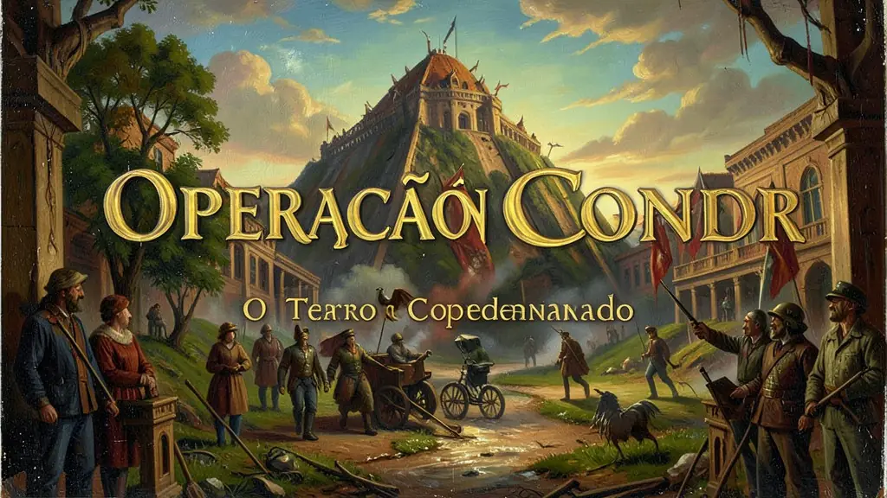
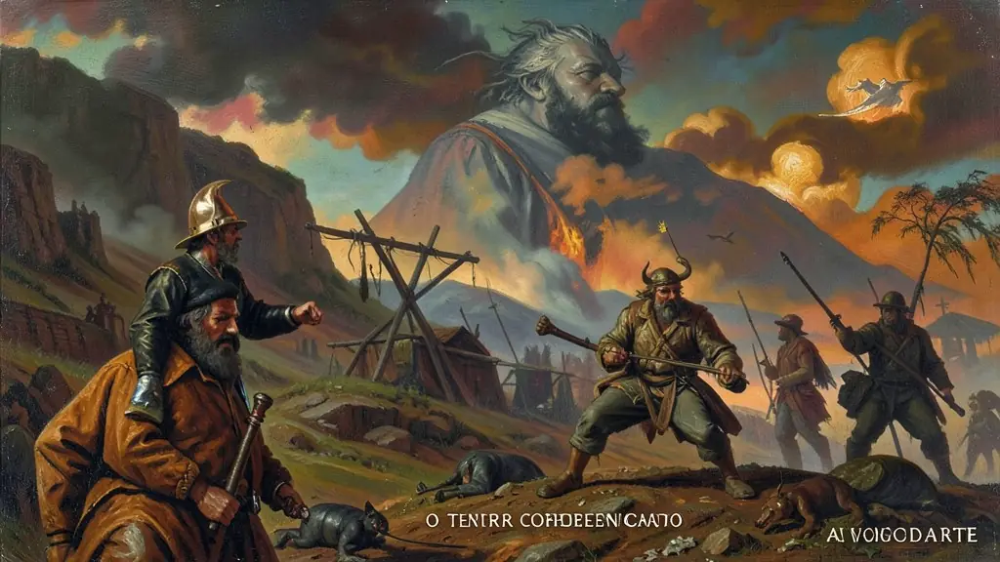
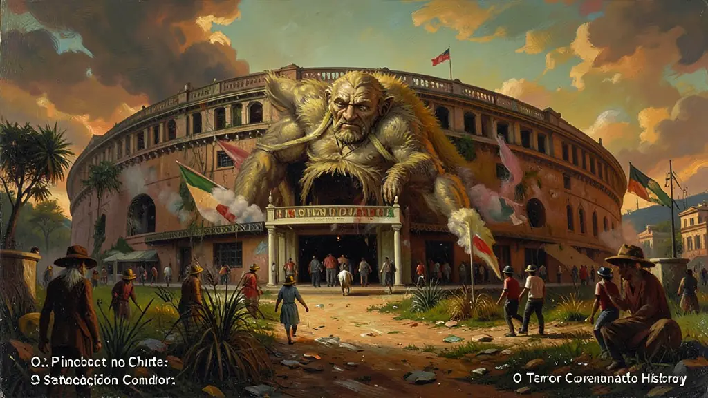

Capítulo 01
1. O Pacto Secreto de Santiago
A Operação Condor nasceu em 1975, no Chile, em uma reunião de chefes de inteligência convocada por Manuel Contreras, braço direito de Pinochet. Eles criaram um banco de dados compartilhado sobre 'subversivos' e um sistema de rádio secreto (Condortel). Se um brasileiro fugisse para a Argentina, os militares argentinos o prendiam e o entregavam para ser torturado e morto no Brasil, e vice-versa. As fronteiras viraram armadilhas mortais.

Capítulo 02
2. Argentina: O Vôo da Morte
A ditadura argentina foi a mais cruel da região. Para não deixar rastros dos corpos, os militares criaram os 'vôos da morte': prisioneiros eram dopados e jogados vivos de aviões no Rio da Prata ou no oceano. Milhares de bebês, filhos de prisioneiras, foram roubados e entregues para famílias de militares, uma ferida que a Argentina ainda tenta curar através do DNA e da luta das Avós da Praça de Maio.

Capítulo 03
3. Pinochet no Chile: O Estádio da Morte
O golpe de 1973 no Chile foi transmitido ao vivo pela TV: o bombardeio do palácio presidencial por aviões da própria força aérea. Pinochet transformou o Estádio Nacional de Santiago em um campo de concentração e tortura. O Chile tornou-se o laboratório do neoliberalismo econômico radical de Milton Friedman, enquanto o povo vivia sob silêncio e medo. Pinochet governou até 1990 e morreu sem ser julgado por todos os seus crimes.

Capítulo 04
4. O Papel dos Estados Unidos: Kissinger e a CIA
Documentos desclassificados provaram que o governo americano sabia da existência da Operação Condor e a incentivava. Henry Kissinger, secretário de Estado dos EUA, via as ditaduras como 'males menores' necessários para impedir o avanço de Cuba e da URSS na América Latina. Os EUA forneceram treinamento em técnicas de interrogatório e inteligência (Escola das Américas), tornando-se cúmplices morais e técnicos do terror no Sul.
Capítulo 05
5. Memória e Verdade: Nunca Mais
Com o fim das ditaduras nos anos 80, o continente começou a busca pela verdade. No Brasil, o livro 'Brasil: Nunca Mais' denunciou a tortura sistemática. Na Argentina, as Comissões da Verdade levaram generais à prisão perpétua. A Operação Condor hoje é estudada para que as novas gerações entendam que a democracia é um valor frágil que deve ser defendido contra qualquer tentativa de uso do Estado para o extermínio de quem pensa diferente.
Nas sombras opressivas da bipolaridade geoestratégica hemisférica na década dos sombrios anos sententa transcorria sorrateiramente o acordo infame ultra-secreto estabelecido entre os mais sanguinários algozes de juntas ditatoriais do sul-americanas ditada pelos anais da 'Operação Condor'. Foi configurada o suprassumo letal da concertação do terrorismo militarizado internacional repressor na guerra infrene imposta perseguição da inteligência estadunidense e do cone sul americano.
Transpondo violentamente jurisdições legais das fronteiras platinas das ditaduras em coordenação uníssona sinistra dos generais Pinochetitas, argentinos e do comando repressivo brasileiro extinguiam e perseguiam simultaneamente defensores políticos operários exilados na conífera caçada macabra dos que pleiteavam resistência na Argentina, Bolívia Brasil Paraguai e vizinhos, mediante tenebrosos métodos crueis, torturas atrozes até execuções e do cruel arremesso no oceano nos malfadados Voos da inescrupulosa Morte.
Em âmbito didático, compreender a Condor evidencia não tratar dos regimes isolados nacionalistas contidos em suas próprias repúblicas, mas a formatação estrutural sistêmica que consolidou e sustentou uma máquina supranacional conjunta assassina no Terceiro Mundo sob patrocínio taciturno tolerante impulsionado do espectro intervencionista antissubversivo das doutrinas predatórias e da intervenção hemisférica das superpotências globais mundiais estadunidense impiedosos ao avanço e receio comunista.
Fonte: FICO, Carlos. Como Eles Agiam: Os subterrâneos da Ditadura Militar. Record, 2001.
Atividades interativas
Questões para fixar
A Operação Condor, articulada na década de 1970 entre governos ditatoriais da América do Sul, consistia fundamentalmente em:
A luta das 'Mães da Praça de Maio' na Argentina tornou-se um símbolo mundial de resistência por qual motivo principal?
Qual foi o principal objetivo da Operação Condor?
Qual foi o país onde ocorreu o auge da violência durante a Operação Condor?
Qual é o nome do movimento que resistiu ao regime militar na Argentina e é conhecido por sua luta em favor dos direitos humanos?